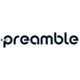
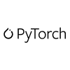
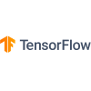
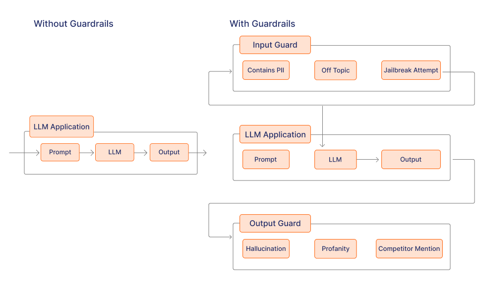
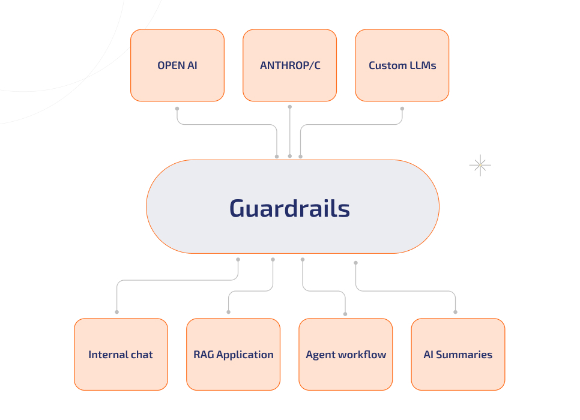

We Help You Create Advanced Solutions With Our Guardrails Ai Development Services Focusing On Ensuring That Your Ai Solutions Are Safe, Ethical And Accurate. As Fast As Ai Is Moving In The World, The Increasing Concerns Of Data Privacy And Ethics Are Growing And Regulatory Compliance Requirements For Businesses Are On The Horizon. As Businesses It Is Imperative That You Make Sure That Your Products Are Ready For The Regulatory Requirements When They Hit And Our Experts Are Just What You Need To Get Started. Our Industry Leading Experts In Ai Technologies And The Guardrails Platform Help You Transform Your Ai Products And Provide End To End Services For Enhancing Your Protections. Talk To One Of Our Specialist Consultants Today And Make Your Business Future-Ready.
-
-
-
-
-
-

-
-
-
Guardrails Ai Hub
In Reality, Building And Managing Ai Systems Requires A Lot Of Expertise And Guardrails Ai Hub Is A Breath Of Fresh Air For Businesses Looking To Transform The Way They Manage Their Ai Systems. Our Guardrails Ai Development Covers This From End To End Providing You With A Seamless And Unified Platform For Monitoring, Debugging And Managing Your Ai Systems. You Easily Handle Complex Workflows For Your Large Scale Deployments For Ai Agent Development. Additionally, You Can Enhance The Security And Ensure Ethical Oversight Of Your Ai Systems By Using Guardrails’ Built In Tools And Ensure That Your Ai Applications Comply With Ethical And Regulatory Standards In A Quickly Changing Regulatory Environment.
Guardrails Also Allows You To Gather Insights About Your Ai App’s Behavior And Identify Potential Misuse So That You Can Rectify Any Issues Before They Harm Your Business. Through Guardrails Ai Development You Can Also Scale Seamlessly Across Various Industries Owing To Its Modular And Customizable Design Along With Support For Diverse Applications Which Can Range From Finance To Healthcare.
Guardrails Ai Hub Features
Guardrails Ai Hub Provides You With Comprehensive Tools For Managing Your Ai Solutions Centrally Which Supports Ai Tools, Models And Integrations Under The Same Umbrella. It Also Provides You With Built In Tools For Ensuring That You Comply With Global Regulations Like Gdpr, Hipaa And Ccpa Which Is Essential In An Environment Where Regulators Are Increasingly Trying To Firm Their Grip To Ensure User Privacy And Security. Guardrails Ai Development Even Gives You Automatic Checks To Ensure That You Are Consistently Following Ethical And Legal Guidelines. The Customization And Scalability You Get With The Platform With Highly Tailored Features For Various Industries And Scalable Infrastructure To Help You Grow As Your Organization Grows.
Guardrails Ai Hub Development
We Can Provide You With Comprehensive Services For Adopting Guardrails Ai Hub Into Your Business And Ensure That You And Your Users Are Protected. Additionally, We Also Provide You With Agile Methodologies For Project Management Through Our Guardrails Ai Development Services Which Allows You To Make Faster Iterations And User Centric Designs For Your Ai Products. One Of Our Major Focuses Is On Providing You With Development Services That Possess High Reliability And Low Latency So That You Can Provide Your Users With A Real Time Experience When They Use Your Ai Products.


The Technology Stack That We Use For Building Solutions On Guardrails Include Advanced And Modern Frameworks Like Tensorflow And Pytorch Along With Cloud Services Like Amazon Web Services, Azure And Google Cloud Platform. In Addition To This When You Choose Guardrails Ai Development You Also Get Its Modular Architecture For Seamlessly Updating Your Ai Products And For Integrations.
Guardrails Ai Hub Integration
Building On Guardrails For Securing Your Ai Systems Also Comes With The Ability To Quickly Integrate It With Multiple Third Party Software, Legacy Systems That You May Already Be Using For Your Business And Other Modern Applications Built Using The Latest Technologies. Guardrails Further Simplifies Connections With External Tools And Platforms With Its Api First Design. You Can Seamlessly Implement Guardrails Transformative Benefits Into Your Business And Use Cases Include Integrating Customer Support Chatbots With Crm Systems, Automating Your Data Analysis Workflows In Business Intelligence Platforms And Much More With Guardrails Ai Development.
Security Ai Development
Guardrails Equips You With The Right Tools And Features So That You Can Proactively Monitor Your Ai Systems And Applications And Ensure Their Security. It Is A Great Form Of Protection Against Hacks And Misuse Because Of How Effective It Is In Using Machine Learning Algorithms To Detect Anomalies Before Anything Catastrophic Happens. As A Business You May Have To Handle Sensitive Information From Customers And Users Which Makes Data Protection The Need Of The Hour For You. As One Of The Trusted Ai Agent Development Companies We Have Got You Covered There With Our Guardrails Ai Development Helping You Protect Your Customers And Yourselves From Malicious Actors And Unfavorable Incidents.
Some Great Use Cases For Implementing This Technology Would Be Applications Like Employee Monitoring Software Where You Can Analyze The Activities Of Employees And Ensure Compliance With Data Privacy Laws. A Major Benefit Here Is That You Can Make The Monitoring Process Less Intrusive As The Ai System Works In The Background With You Having To Directly Engage With Your Employees. Another Use Case Could Be Implementing A System That Can Detect Anomalies In Large Datasets Which Can Help You Prevent Insider Threats.
Ai To Protect Data Misuse
Our Guardrails Ai Development Services Can Help You Protect Your Users And Yourselves From Unauthorized Activities By Malicious Actors. Guardrails Provides You With Efficient And Effective Tools To Identify Unusual Data Patterns And Unauthorized Activities So That You Can Prevent Attacks Before They Happen. What’s More Is That You Can Do All This In A Completely Autonomous Way With The Power Of Ai. The Way It Does It Is By Using Advanced Predictive Ai Models That Have The Capabilities To Detect And Prevent Unauthorized Activities Or Breaches To Your Systems. A Major Use Case For This Technology Is In The Finance Sector For Preventing Fraud.
Guardrails Ai Development Allows You To Create Systems That Can Monitor Your Users’ Transactions And Detect Anomalous Patterns. This Helps You Prevent These Attacks Before They Happen And Notify Users To Stay Safe Before They Lose Their Funds. Another Area Where This Technology Shines Is In Safeguarding Intellectual Property. You Can Build Ai Systems That Can Restrict Users From Accessing Files If They Do Not Have Authorization And Act As A Solid Layer Of Protection For Your Business And Your Customers.
Ai To Prevent Data Leaks
Data Leaks Are A Growing Concern For Businesses Around The World Especially In Today's Day And Age When Ai Is Becoming So Popular And This Is Where Guardrails Ai Development Comes In. As Useful As Advanced Ai Solutions Are It Is Also A Fact That These Systems Require A Large Amount Of User Data To Provide Things Like Personalization. And If You Don’t Have The Necessary Failsafes In Place Valuable Data From Your Users Could Be Leaked Into The Hands Of Malicious Actors. However, You Can Build Secure Systems Using The Guardrails Platform That Are Capable Of Monitoring Data Transmission Using Ai And Look For Unusual Activities Or Potential Vulnerabilities.
Another Thing You Can Do Is Implement Advanced Encryption Techniques Into Your Applications Using Guardrails Ai Development And Provide Real Time Alerts To Users To Secure Sensitive Information. This System Can Also Alert You As An Administrator Of Your Applications About Incidents Like This So That You Can Act On Time. When You Look At The Practical Uses Of This Technology You Can Take The Healthcare Industry As An Example. You Can Seamlessly Build Software Solutions That Can Protect Medical Records In Healthcare Databases. Additionally, You Can Also Ensure Secure File Transfers In Corporate Communications.
Toxic Language Protection Ai Company
Through Our End To End Guardrails Ai Development Services We Can Help You Protect Your Users And Your Business From Toxic Or Inappropriate Interactions Through Guardrails Toxic Language Protection. In Any Setting Protecting Your Users’ Rights Is Extremely Important And If You Have A Platform That Allows Users To Communicate With Each Other Then Guardrails Toxic Language Protection Is Your Perfect Solution For Minimizing These Interactions. You Can Seamlessly Implement Systems That Can Detect, Filter And Mitigate Harmful Language In Real Time Communications. This Security Layer Is Essential For Protecting Users And Making Sure That Your Brand Image Does Not Get Affected By Unknown Malicious Actors Or Hate Speech.
Guardrails Ai Development Is Great For This Because Many Times Your Users Will Be From Different Parts Of The World And Moderating These Activities Can Be Next To Impossible. However, The Guardrails Platform Provides You With Solutions For This Where You Can Build Systems That Can Adapt To Different Contexts And Even Languages And Reduce The Risk Of Toxic Behavior In Digital Spaces. A Great Use Case For This Technology Is In The Social Media Space Where You Can Create Ai Agents That Can Moderate Comments To Ensure That No One Is Spreading Hate, Misinformation Or Harmful Content. Another Side Of The Coin For Guardrails Ai Development Is In The Workplace With Your Communications Systems To Ensure That People In Your Organization Maintain A Professional Decorum While Communicating.
Guardrails Ai Langchain
Guardrails Ai Langchain Is A Great Solution For You If Your Goals Are To Enhance Safety, Accuracy And Reliability Of The Ai Applications You Build Using The Langchain Framework And Custom Ai Development. This Specialized Integration Uses Langchain Which Is A Framework That Allows You To Develop Applications Powered By Large Language Models. Here You Can Embed Robust Guardrails Within Your Langchain Workflows And This Ensures That The Outputs Of Your Ai Follow Predefined Parameters. Guardrails Ai Development Is Perfect For This Because You Can Prevent Issues In Your Ai Applications Like Hallucinations, Data Misuse Or Biased Responses Which Oftentimes Can Be Amplified With Ai Models. It Also Provides A Host Of Features Like For Example Input Validation, Output Refinement And Real Time Monitoring.

This Allows You To Create Applications Where You Can Ensure That The Outputs Meet Ethical Standards, Legal Standards And The Standards Of Your Organization. Guardrails Ai Langchain Can Be Especially Useful For You If You Handle Sensitive Data Like In The Case Of Healthcare, Finance And Customer Support. Guardrails Ai Development Can Be Very Rewarding For Your Business Because It Helps You Build Solutions That Allow You To Maintain Trust And Accuracy For Your Customers. This Special Combination Of Technologies Will Allow Your Business To Make Use Of The True Power That Advanced Language Models Have And At The Same Time Ensure Safety And Compliance.
Guardrails Ai Langchain Tools
By Using Guardrails Ai With Langchain You Can Seamlessly Build Systems Where You Can Facilitate Connections Between Advanced Ai Models And External Systems For The Purpose Of Automation. In The Same Light, Guardrails Ai Development Is A Great Solution In This Context For Simplifying Complex Workflows By Linking Ai Tools, Apis And Datasets. When You Look At Its Capabilities You Can Enable Things Like Natural Language Processing Tasks For Summarizing Content And Question Answering While Keeping The Interaction Secure. It Also Allows You To Automate Repetitive Or Mundane Tasks Which In Turn Improves Your Efficiency.
Guardrails Ai Langchain Framework
The Guardrails Ai Langchain Framework Is A Very Powerful Tool For You To Develop Ai Pipelines That You Can Customize According To The Specific Needs Of The Industry You Operate In. Guardrails Ai Development Also Enables You To Make Use Of Predefined Templates That You Can Implement For Common Use Cases. This Is An Amazing Feature And Flexibility You Get Because It Allows You To Reduce The Time It Takes To Develop Your Solutions. Another Major Benefit Here Is That You Can Quickly Implement Safeguards Into Your Applications Which Can Protect You And Your Users Against Ai Outputs That Are Harmful, Biased Or Inaccurate.
The Potential Applications For This Technology Is Very Wide And You Can Do Things Like Automate Your Customer Support Process By Implementing Advanced Ai Agents Through Chatbot Development That Are Capable Of Providing Instant Responses That Are Also Accurate. Through Guardrails Ai Development You Can Also Streamline Your Data Extraction From Unstructured Datasets And This Includes Things Like Legal Documents Or Medical Records Which In Turn Helps You Enhance Your Productivity. Another Great Use Case Is For The Education Sector Where You Can Build Platforms That Are Capable Of Leveraging The Power Of Ai To Provide Learners With Personalized Learning Paths And Curriculums.
Guardrails Ai Langchain Model
Guardrails Ai Langchain Also Provides You With Useful Pretrained Ai Models Which Are Trained On Very Large Datasets. This Is A Great Solution Because Through Guardrails Ai Development You Can Ensure That Your Applications Can Produce Ai Outputs That Consider Industry Specific Context And Deliver Highly Accurate Responses. These Models Are Also Fine Tuned Which Is Beneficial If Your Application Has Unique Requirements And They Are Capable Of Providing Outputs That Are Aligned To The Goals Of Your Organization. Another Major Benefit Of Using These Pre-Trained Models Is That They Have Safety Constraints Built Into Them And Ensure That The Outputs You Get Are Reliable, Ethical And Context Aware.
This Solution Has A Host Of Advancements Through Guardrails Ai Development Like For Instance Real Time Updates Which Ensures That Your Ai Models Evolve As Users' Needs Evolve, Adapt To Different Regulatory Changes And Also To Industry Advancements In The Fast Paced World That We Live In. Another Great Advancement And Very Beneficial To Businesses Across Sectors Is The Built In Solution For Reinforcement Learning Which Enables Your Application To Learn From Human Feedback And Improve The Model’s Performance Over Time. Additionally, It Also Gives You The Ability To Integrate Multimodal Capabilities Into Your Applications Which Allow You To Integrate Text, Images And Audio Data For Ai Solutions That Are Comprehensive.
Guardrails Ai Development

Our Guardrails Ai Development Services Enable You To Supercharge Your Ai Applications For The Demand Of The Modern Market. Guardrails Is A Platform That Aims To Help Businesses Quickly Create Comprehensive Solutions For Their Customers Without Having To Build Ai Models From Scratch And More Importantly Allowing You To Create, Test And Deploy Advanced Ai Systems For Enhanced Security And Privacy. It Is Also A Flexible Solution Which Allows You To Leverage Ai Powered Data Analytics To Monitor Activity On Your Applications And In Addition To That Provides Tools To Deploy Your Models On Both Cloud Based And On Premise Hardware Systems.
Guardrails Ai Development Is Also A Great Solution For Businesses That Are Looking To Keep Their Development Costs Low Because You Don’t Have To Build Your Applications From Scratch. Training Ai Models And Testing Their Capabilities Is A Highly Time Consuming Task And Requires Powerful Gpus. In Reality, It Is Impractical To Purchase Gpus For This Purpose Which Leaves Cloud Gpu. However, As Training Your Ai Models Is A Long Process Your Cloud Gpu Costs Can Quickly Add Up. Thus Makes Guardrails The Perfect Solution For Businesses Looking To Be Lean And Cost Efficient.
Guardrails Ai Development Cost
Like Developing Any Piece Of Software The Development Cost For Guardrails Ai Development Will Depend On The Scale And Complexity Of The Ai Systems That You’re Trying To Build. This Will Include Everything You Use For The Development Like The Number Of Ai Models That You Use, The Apis And Data Pipelines As Required. In Addition To This While You Can Minimize The Costs For Training Your Ai Models You Still Need Infrastructure To Run Your Applications Like Cloud Hosting Compute Power, Storage Capacity And Network Bandwidth And All Of These Will Add To Your Ai Development Cost. The Other Considerations Are Related To What You Do After You Deploy Your Models And Applications Like Ongoing Maintenance Costs, Cost For Debugging And Compliance With Regulations That Are Continuously Evolving.
Guardrails Ai Development Platform
Guardrails Ai Development Provides You With Everything You Need To Build Your Secure Ai Powered Applications. This Includes Things Like A Comprehensive Environment For Creating, Testing And Deploying Your Ai Systems With End To End Lifecycle Management. The Platform Provides You With Advanced Tools For Debugging Which Allow You To Seamlessly Identify And Resolve Problems In Ai Workflows Efficiently. It Supports Both Cloud Based And On Premise Deployment Which Is A Great Solution If You’re In Specialty Industries Like Healthcare And Finance. Additionally, You Also Get Advanced Analytics Which Are Integrated Into The Platform And Monitoring Dashboards That You Can Use To Track System Performance And Usage Patterns To Always Be Informed.
Heir Guardrails Ai Development
Through Guardrails Ai Development You Also Get Systems That Are Designed With Modularity So That You Can Make Future Enhancements As Advancements In Ai Technologies Are Evolving Everyday. Guardrails Also Provides You With Long Term Support And Maintenance Plans To Make Sure That You Can Easily Comply With New Regulations And Standards As The Space Matures. The Solutions You Get With Guardrails Are Also Built With Scalability In Mind And Enables Your Business To Expand Your Application’s Capabilities Without Having To Reengineer Extensively.
Guardrails Api Development
For Businesses Looking To Expedite Their Guardrails Ai Development Process And Use Their Solutions Flexibly Their Apis Are A Great Choice To Go With. You Get A Host Of Solutions Which Includes Things Like Tools For Streamlining Your Development Process With Security Features Built In, Enhancing Performance Through Continuous Monitoring And Updates And To Maintain Backward Compatibility.
Guardrails Api Development Tool
The Api Development Tools Is A Powerful Solution For Businesses Wanting To Securely Build Solutions For Their Customers. It Streamlines The Api Development Process With Built In Security Protocols That Are Capable Of Preventing Unauthorized Access And Data Breaches. You Also Get Advanced Debugging Tools For Guardrails Ai Development Where You Can Monitor Api Interactions And Ensure That Your Applications Perform As You Want Them To. Additionally, You Get Tools For Things Like Version Control Which Allows Organizations To Manage Updates And Make Their Applications Backward Compatible For A Seamless Experience. Their Support Structure Include Both Restful Apis And Graphql Apis Which Provide You With Flexibility In Terms Of Integration And Functionality,
Guardrails Api Development With Ai
The Integration Of Ai Is A Game Changer Because You Get Features Like The Ability To Embed Predictive Capabilities Into Apis Through Guardrails Ai Development. This Allows For Smarter Interactions And Better Decision Making. It Supports Dynamic Input Handling Which Allows Your Apis To Adapt To Changing User Requirements In Real Time. Additionally, It Also Enhances Your Applications Data Analysis Capabilities Which Can Provide You With Actionable Insights And Allows You To Automate Complex Workflows Seamlessly. This In Turn Helps You Improve Your Customer Experience Through The Integration Of Ai Driven Personalization Into Your Api Responses.
Heir Guardrails Api Development
The Heir Guardrails Api Provides You With A Lot Of Scalability And Customization. Through Guardrails Ai Development You Can Make Use Of These Apis Which Are Designed To Handle High Traffic Volumes And Complex Workflows Without Compromising On The Performance. It Also Allows You To Customize Your Configuration Which You Can Tailor To The Specific Industry You Operate In Like For Example Healthcare, Finance And Retail. Additionally, It Features A Future Ready Architecture That Ensures Seamless Integration With Emerging Technologies And Your Business Requirements As They Evolve.
Secure Your Ai-Driven Business With Our Guardrails Ai Development Company
Guardrails Ai Development Is A Great Solution For Businesses Looking To Enhance Their Ai Applications With The Security And Privacy That Your Customers Deserve. Guardrails Is A Flexible Solution And Platform That Provides You With Powerful Tools To Seamlessly Build, Test And Deploy Ai Systems At Scale. The Major Benefit Of Guardrails Is That You Can Easily Implement A Layer Of Protection For Your Ai Applications Which Protects You And Your Users From Toxic Language, Biases And Other Harmful Material That Ai Models May Unintentionally Generate. This Helps You Protect Your Business, Your Users And Comply With Evolving Regulatory Compliances In This Face Paced Ai Era.